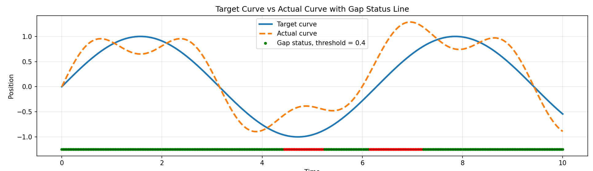
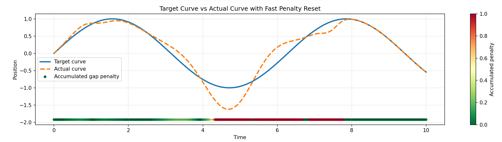

Lab Identity
Coventry University CSMM is contributing a campus evidence node focused on remote robot operation, latency analysis, and reusable sim2real evidence.
CSMM Robotics Evidence Node for remote teleoperation, trustworthy robotics evidence, and SONAIR collaboration.
Coventry University CSMM is contributing a campus evidence node focused on remote robot operation, latency analysis, and reusable sim2real evidence.
The portal analyses the UCL-Nottingham UR5e teleoperation dataset, including RTT samples, command latency records, and session audit events.
Email: yeh19@uni.coventry.ac.uk
Node ID: csmmEvidence from a UCL-Nottingham UR5e teleoperation session, showing how timing variation can affect remote robot reliability.
Median RTT
Typical round-trip network response.
RTT P95
Tail latency for reliability checks.
Median Command Delay
Typical command acknowledgement delay.
Tail Timing Gap
RTT and command P95 overhead above median.
Round-trip time across the session, with audit events overlaid where available.
Distribution of relay round-trip delay for robot commands.
This section connects communication timing to physical UR5e movement: what the network does, and what the robot actually does afterwards.
Median Motion Response
Command to measurable TCP displacement.
TCP Path Travelled
Total physical end-effector movement.
Peak TCP Speed
Largest observed physical motion rate.
Physical Risk Window
Network tail gap plus motion-response P95.
RTT and TCP speed are aligned by normalised session progress because the motion stream has separate absolute timestamps.
Delay from a logged operation to at least 0.5 mm of TCP displacement within a 3 second window.
Loading physical motion interpretation...
Two additional SONAIR evidence metrics compare the real TCP movement with an estimated ideal one-step command trajectory. They focus on both precision and recovery after deviation.
The dataset does not provide a direct target_position field, so the ideal next position is inferred from the current command speed and the previous real TCP position.
The first metric shows how often the robot stays within a tolerance. The second shows whether above-limit errors recover quickly.


X, Y, and Z are stacked as separate channels. In each channel, the real TCP trace and the command-inferred ideal trace share the same axis.
Accuracy is scanned across multiple thresholds instead of reporting a single cold number.
The 10 mm threshold marks deviation episodes; long consecutive episodes reduce the recovery-aware score.
Loading trajectory quality interpretation...
The replay brackets each high-risk timing case with the nearest real joint snapshots, so the evaluation can show the robot posture before the issue, at the critical moment, and after recovery.
Waiting for critical pose data...
Tail Timing Gap combines RTT tail overhead and command-delay tail overhead. It highlights the extra delay a physical robot may experience beyond typical simulated control timing.
Loading interpretation from the dataset...
This node publishes non-sensitive timing and reliability evidence. It does not publish private operator identity, credentials, or infrastructure secrets.
The organiser server can embed this portal and retrieve the current CSMM assessment result from the dashboard metrics.